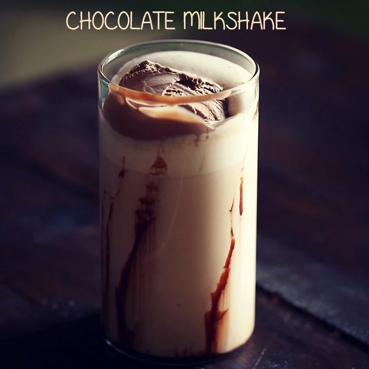

Chocolate Milkshake

Ingredient of chocolate milkshake
- chocolate ice cream (2 cups)
- 1/2 cup milk (cold)
- 1/4 cup chocolate syrup
Steps
- Place ice cream, milk and syrup in blender container.
- Cover; blend until smooth. Garnish, if desired. Serve immediately.